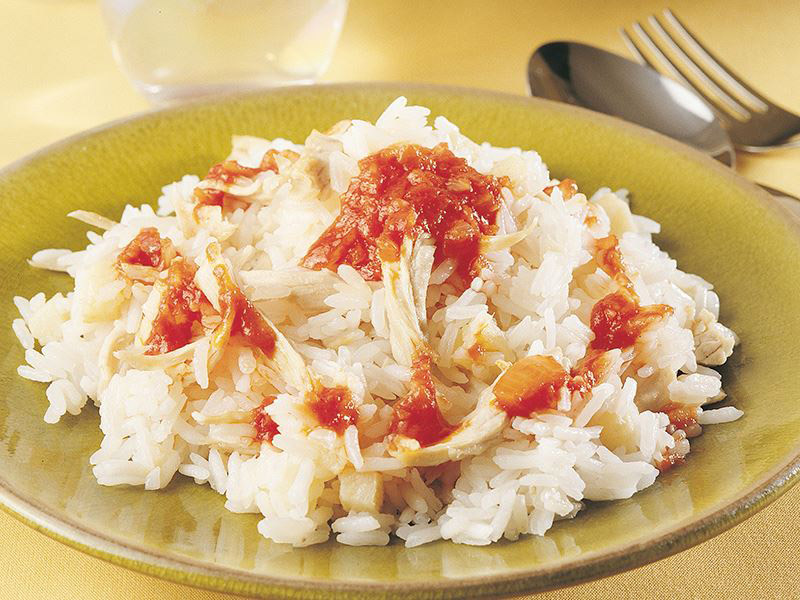
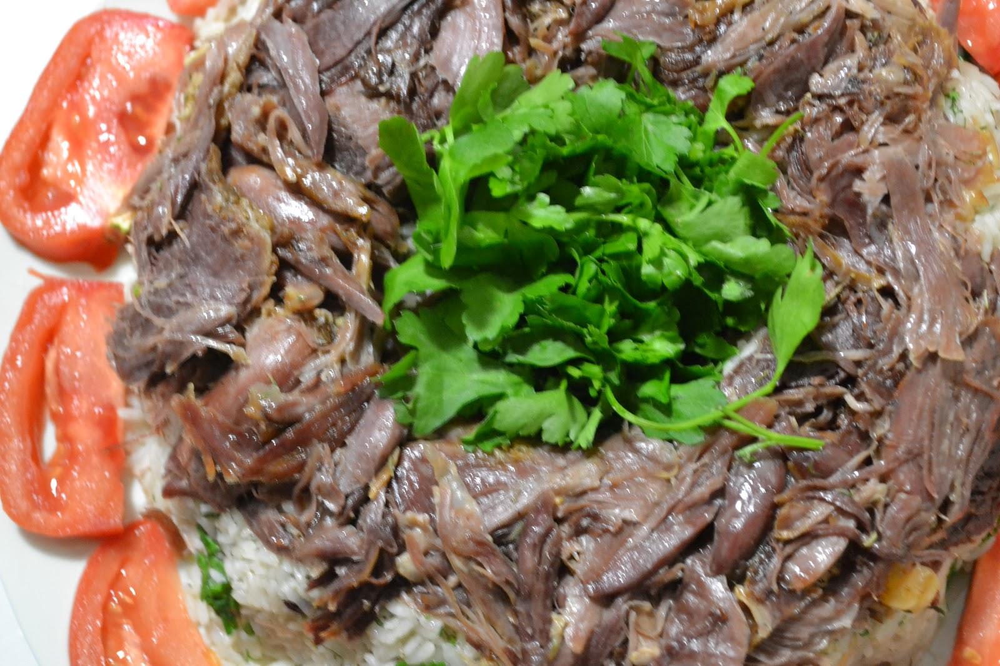

Malzemeler
- 500 gr kaz göğüs eti
- 1.5 su bardağı pirinç
- 1 soğan
- 2.5 su bardağı et suyu
- 150 gr tereyağı
- 1 çorba kaşığı domates salçası
- 1 ayva
- Tuz
Nasıl Yapılır
- Gögüs etini 3 su bardağı tuzlu suda 10 dakika haşlayıp didikleyin. Etin suyunu ayırın. Etleri bir tavaya
alıp kendi yağıyla 5-10 dakika kavurun.
- Pirinci bol suyla yıkayıp süzün. 2.5 su bardağı et suyunu yayvan bir tencereye alın. Pirinci ve tuzu ilave
edip karıştırın.
- Kapağı kapalı olarak suyunu çekinceye kadar 15 dakika pişirin. 100 gr tereyağını küçük parçalar halinde
pilava ilave edin.
- Tahta kaşıkla harmanlayıp kapağı kapalı olarak 5 dakika dinlendirin.
- Ayvayı soyup küp şeklinde doğrayın. Bir toprak güveçte pilav, et ve ayvayı harmanlayın. Önceden ısıtılmış
180 dereceye ayarlı fırında 20 dakika pişirin.
- Soğanı soyup küp şeklinde doğrayın. Kalan tereyağını küçük bir tavada kızdırıp soğanı kavurun. Salçayı
ekleyip ezerek karıştırın.
- Pilavı servis tabaklarına paylaştırıp üzerlerine 1-2 kaşık salçalı sos ekleyin. Sıcak olarak servis yapın

